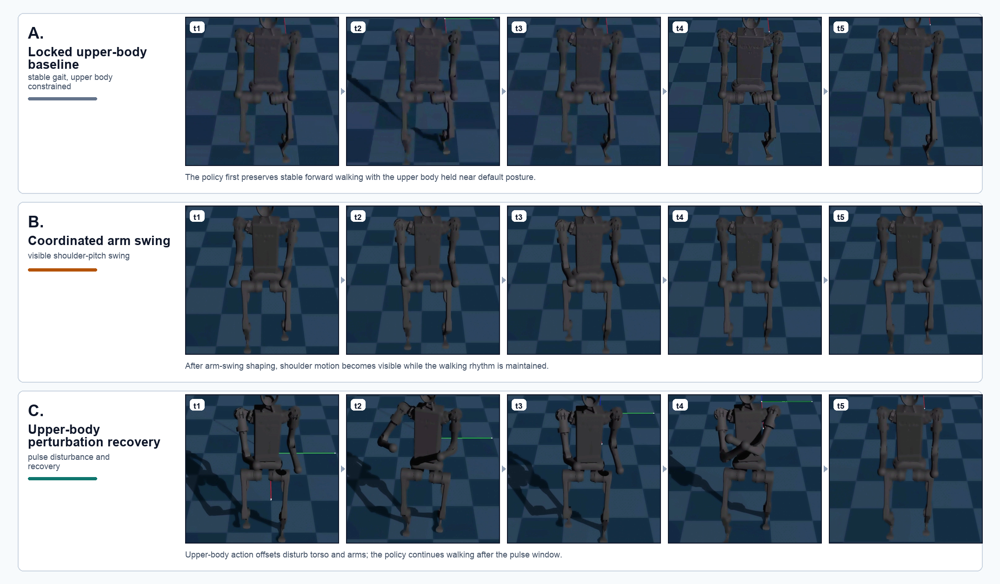
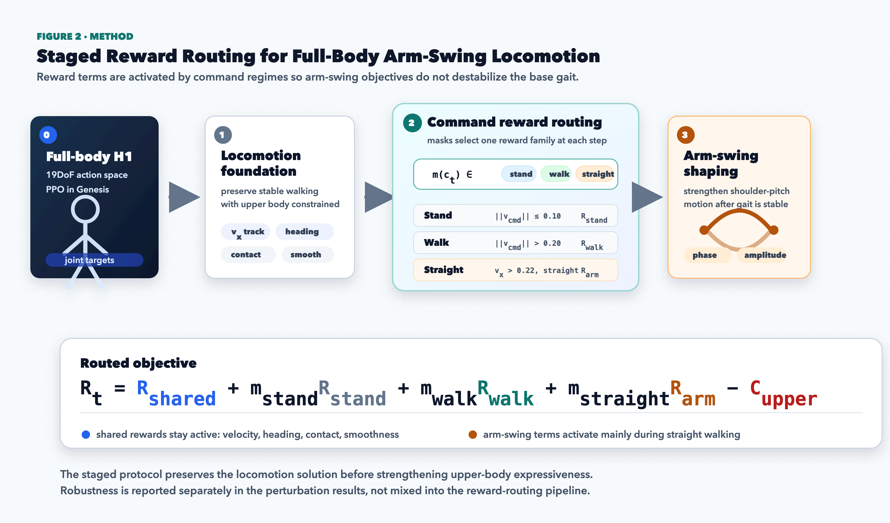

DECISION ML COURSE PROJECT · HUMANOIDVERSE / GENESIS / PPO
Stable Arm-Swing Humanoid Locomotion under Upper-Body Perturbations
A staged reward-routing curriculum preserves full-body walking, introduces coordinated shoulder-pitch arm swing, and evaluates recovery under torso, shoulder, and elbow action pulses.
Course Project Team · H1 Humanoid · 19DoF full-body control · Headless evaluation in Genesis
Dynamic Evidence: from Locked Upper Body to Perturbation Recovery
Figure 1 · temporal rollouts

Temporal strips compare stable locked-upper-body walking, gait-synchronized arm swing, and recovery after an injected upper-body action pulse. The qualitative claim is temporal: the robot continues walking while upper-body behavior changes from constrained, to coordinated, to externally perturbed.
Method: Staged Reward Routing

The controller is trained in the full 19DoF H1 action space. Stable locomotion is protected first; command masks then activate stand, walk, and straight-walk reward families so arm-swing objectives appear mainly when they are compatible with forward walking.
Quantitative Robustness under Upper-Body Pulses
100%survival at amp = 2.0 across 32 environments
0 vs. 95falls: robust policy vs. arm-swing baseline under amp2
Policy / setting
Amp
Survival
Mean time
Falls
Track err.
Max tilt
Robust policy
0.0
100%
20.00s
0
0.0228
4.67°
Robust policy
1.0
100%
20.00s
0
0.0225
7.81°
Robust policy
2.0
100%
20.00s
0
0.0245
9.12°
Arm-swing baseline
2.0
0%
5.48s
95
0.1401
89.93°
Robust policy under increasing perturbation amplitude
Survival100% to 100% to 100%
Tracking error0.0228 to 0.0245 m/s
Max tilt4.67° to 9.12°
The amp0 run uses the same perturbation scheduling with zero magnitude. At amp2, the robust policy retains arm motion: shoulder-pitch swing amplitude 0.2536 rad and elbow sagittal separation 0.1165 m, so robustness is not obtained by simply freezing the upper body.
Experimental Story
1
Locomotion foundationFull-body H1 walks forward while the upper body is constrained to preserve a reliable gait.
2
Command-routed preparationStand, walk, and straight-walk masks reduce interference between posture, gait, and arm objectives.
3
Coordinated arm swingShoulder-pitch phase and endpoint-sagittal terms make the upper body visibly participate in walking.
R
Perturbation-robust policyHeld action offsets on torso, shoulder, and elbow channels test whether the gait recovers.
Takeaway: unlocking upper-body joints is not enough. Stable arm-swing locomotion emerges when walking is protected first, arm coordination is routed by command regime, and robustness is evaluated with explicit upper-body disturbances.
Limitations
Evidence is simulation-only and short-horizon. Upper-body naturalness is shaped by hand-designed phase and amplitude rewards rather than human motion priors. Future work should add angular-momentum analysis, energy cost, longer horizons, and cleaner camera evaluation.
Conclusion
The final controller demonstrates stable forward walking, visible arm swing, and bounded recovery behavior under explicit upper-body disturbances, forming a compact paper-style story from curriculum design to quantitative robustness.